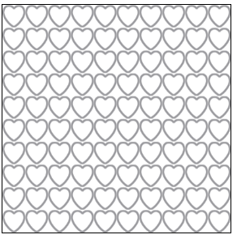

背景图：（相关验证代码请查看代码，在验证时需将当前不需要验证的代码注释掉）
1.inherit:从父元素继承属性设置
2.background-repeat:平铺(在图片大小小于元素尺寸时背景图默认平铺):
no-repeat:取消默认平铺
repeat-x:横向平铺
repeat-y:纵向平铺
3.background-size:尺寸
px、百分比:依旧默认平铺元素

cover:等比放大覆盖元素
contain:等比放大,直到图片的一边达到元素的边框
4.background-attachment:固定
scroll:图片随滚动条滚动而上下移动
fixed:图片固定在元素中不会随滚动条移动
----由于需要动态设置可以查看代码自己试验
5.background-position:定位
方式1：
(+:取值为正 单位:px)
x:水平偏移 + 右边 -左边
y:垂直偏移 + 下 -上
----background-position:25px 50px;
方式2：
(以元素边框的左右为基准)
x left right center
y top bottom center
----background-position:left top;
----background-position:center；
(需要注意一点的是，除了设置背景图的固定以外，在设置背景图片的尺寸与定位时，若不取消图片的默认平铺，此时依然会对元素进行背景平铺)
<!DOCTYPE html>
<html>
<head>
<meta charset="UTF-8">
<title>背景图</title>
<!-- 背景图：
1.inherit:从父元素继承属性设置
2.background-repeat:平铺(在图片大小小于元素尺寸时背景图默认平铺):
no-repeat:取消默认平铺
repeat-x:横向平铺
repeat-y:纵向平铺
3.background-size:尺寸
px、百分比:依旧默认平铺元素
cover:等比放大覆盖元素
contain:等比放大,知道图片的一边达到元素的边框
4.background-attachment:固定
scroll:图片随滚动条滚动而上下移动
fixed:图片固定在元素中不会随滚动条移动
5.background-position:定位
方式1：
(+:取值为正 单位:px)
x:水平偏移 + 右边 -左边
y:垂直偏移 + 下 -上
方式2：
(以元素边框的左右为基准)
x left right center
y top bottom center
-->
<style>
.boxrepeat,.boxsize,.boxattachment,.boxposition{
width: 300px;
height: 400px;
border: 1px solid #000000;
/* 图片可更改 */
background-image: url(img/shoucang.png);
/*从父元素继承属性的设置*/
background-repeat-x:inherit;
}
.boxrepeat{
/*取消默认平铺*/
background-repeat: no-repeat;
/* 横向平铺 */
background-repeat: repeat-x;
/* 纵向平铺 */
background-repeat: repeat-y;
}
.boxsize{
/*背景图片的尺寸:px、百分比--依旧会默认平铺元素*/
background-size: 30px;
background-size: 50%;
/*图片的覆盖cover--等比放大覆盖整个元素*/
background-size: cover;
/*背景图片的包含contain--在取消默认平铺的情况下，将图片等比放大直到图片的一边到达元素的边框*/
background-repeat: no-repeat;
background-size: contain;
}
.boxattachment{
/*图片的固定--scroll:随着页面其余部分的的滚动而移动*/
background-attachment: scroll;
/*图片的固定--fixed背景不会随着滚轮移动 但是元素会移动并且对图片进行一部分的覆盖*/
background-attachment: fixed;
}
.boxposition{
/*背景图片的定位--x:left y:top 位于左边顶部*/
background-repeat: no-repeat;
/* background-position: left top; */
/*背景图片的定位--x:25px y:50px 向右偏移25px 向下偏移50px*/
background-position:25px 50px;
background-position: right bottom ;
/*背景图片的定位--center 居中*/
background-position: center;
}
</style>
</head>
<body>
<div class="boxrepeat"></div>
<div class="boxsize"></div>
<div class="boxattachment"></div>
<div class="boxposition"></div>
</body>
</html>